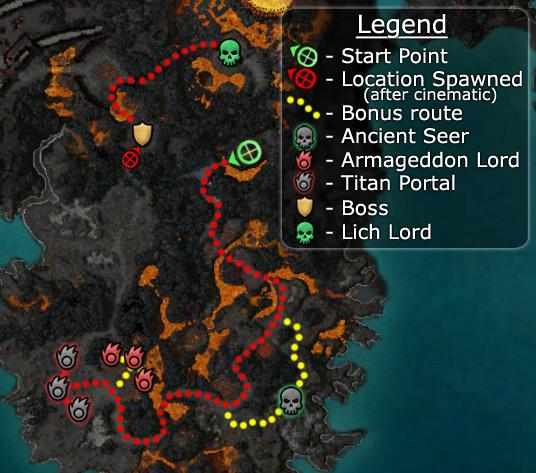

Elite: Eviscerate
M25
Hell's Precipice
◉ Mission Map

Click to enlarge · Local cache · Wiki
Summary (click to expand)
The Undead Lich is revealed, and now you must stop him before he unleashes his titan army across all of Tyria . Seek the Lich and destroy him!
Region: Ring of Fire Islands · Mission: 25 of 25 · Type: Cooperative
✓ Objectives
Stop the Lich from destroying the world.
- Disable the Titan portals.
- Defeat Undead Rurik.
- Destroy the Lich.
- *BONUS* Destroy all three Armageddon Lords.
→ Walkthrough
The Door of Komalie has been opened and now the Lich has gained control over the Titans through the Scepter of Orr. He has opened three portals to teleport these servants onto different regions of Tyria. Players must close them to save the world and finally defeat the Lich. The portals are located south-west of the island. The major difficulty players meet here is the combined strength of two types of foes, the Titans and the Imps called Spark of the Titans. The Imps deal massive area of effect fire damage (Rodgort's Invocation/Mind Burn) and are very dangerous as a group. The Titans cause burning condition to adjacent foes and also spawn other titans when killed in the following sequence: Burning Titan, Risen Ashen Hulk, Fist of the Titans and Hand of the Titans together. Always target the Imps first.
At the beginning of the mission, there are two bridges to the south; avoid fighting over them and use those structures as choke points instead. After crossing the second bridge, players will encounter a fork (both roads merge afterwards) and an overwhelming number of foes. Soon, a boss will spawn and all present patrols will rush towards it. Instead of engaging this huge army, it is advised to wait for them to go away and proceed to the south-east path to avoid such deadly threat. Another group of foes will be there. Before fighting these, make sure the big group has moved far enough away to avoid fighting both mobs. The Ancient Seer will be standing on the path to the south, "guarded" by at least (1) Burning Titan and must be saved for those willing to start the bonus. The Ancient Seer will not be attacked until within radar range of a party member. Continue to the south-west and you will arrive at a small area with different groups with overlapping patrols. The ground has ruptures and standing over them causes burning; watch positioning. Fight those foes separately to avoid over-aggro. Cross a third bridge to find the large open area where the three portals are located with numerous groups of foes.
This section features a large lava pool to the north-east from where more foes emerge until two bosses have spawned. Take out isolated foes that are scattered across the field to reduce their numbers. The very large number of mobs here can all be pulled in ones or twos if one waits patiently enough; Risen Ashen Hulk don't spawn any further Titans either. Then pull the roaming patrol away from the portals. Finally, close the portals by killing the three Portal Wraiths guarding them.
A cinematic will trigger and players will be taken north to face the Undead Prince Rurik with a pair of Spark of the Titans, in addition to two groups of Fist of the Titans. It can be easier to pull Rurik and the two imps from the platform to isolate them away from their titan allies. Once the two imps and Rurik are dead, the next cinematic will trigger.
Defeat the very end boss, the Lich, who has the ability to cast characters into the lava, as well as teleport himself to escape the party's attack. He can also resurrect with full life from one to three times, every time accompanied by two Fists. It is recommended to take care of these servants immediately and before targeting the revived Lich again. Contrary to Rurik's cinematic dialogue, the Lich can be killed anywhere and not just while standing on the Bloodstone.
Parties with heroes/henchmen should flag them at the center of the Bloodstone so that they won't run into the lava.
After completing this mission, your party will be taken to Droknar's Forge (explorable area). Each player will receive a Deldrimor Talisman (once only) from Jalis Ironhammer which can be exchanged for a unique item.
★ Bonus
The bonus goal is to kill three Armageddon Lords (they also spawn Risen Ashen Hulks) at the large lava pool in front of the portals.
To obtain the objectives, players must first save the Ancient Seer located after the large spawn that moves toward the boss. A Burning Titan will be near the Seer, but will not attack them until a player reaches within spirit range. Pulling the mob just north of the Seer can therefore make the rescue easier. The bonus will fail if the Seer dies, even if you kill all the Armageddon Lords. The party healers can protect the Seer until the enemy is defeated.
The Armageddon Lords are themselves relatively easy to defeat and can be pulled individually from the lava pool. Do not close the portals before defeating the Armageddon Lords; doing so will trigger the cinematic, and players will have to backtrack twice--once to finish off the Armageddon Lords and then to engage Undead Prince Rurik later.
Note: There is a chance to face a bad spawn where all the Hulks and Sparks appear very close to the Seer and aggro much more easily, which makes it practically impossible to save the Seer. It is recommended to approach the Seer from the north, as it is possible to trigger these foes on your way south.
◆ Hard Mode
No dedicated Hard Mode section on the wiki — expect tougher foes and adjusted mechanics. See walkthrough notes.
☠ Bosses & Elites
Elite: Greater Conflagration
Elite: Aura of the Lich
Elite: Panic
Elite: Mind Burn
Elite: Hundred Blades
✦ Tips & Notes
Skill recommendations
- Against Sparks of the Titans:
- Ward Against Elements or Ward Against Harm, Mantra of Flame, interrupts like Maelstrom and Panic, and daze-inflicting skills like Technobabble.
- Party-wide heals to counter the massive AoE damage.
- A Frigid Armor tank to draw damage away from the rest of the party.
- Cold damage skills are more effective against titans.
- Area of effect Weakness such as Enfeebling Blood to mitigate damage from multiple Fists and Hands of the Titans.
- Only Sparks and Risen Ashen Hulk are fleshy. Other titans are not and thus are immune to conditions such as Bleeding, Poison and Disease, and don't leave a corpse. Since Risen Ashen Hulks also carry Aura of the Lich, this can make it difficult for minion masters. Steal their minions with Verata's Gaze or Verata's Aura, and bring Jagged Bones if you have access to it.
- Risen Ashen Hulks use Strip Enchantment. Bring cover enchantments if dependent.
- An Avatar of Melandru Dervish can be helpful for elemental armor and party-wide condition removal, as well as applying blindness with Dust Cloak against Fists and Hands of the Titans.
Notes
- Meteors will randomly fall throughout the mission, knocking down, and slightly damaging those they hit. The points at which they fall are predetermined and will not change, but how often they fall is varied.
- Offensive Binding rituals placed outside earshot range may help against the Lich, as he will not move toward you from the center. Make sure you can inflict enough damage to overcome the Lich's health regeneration.
- Complete exploration of this area contributes approximately 1.06% to the Tyrian Cartographer title.
- For the best chance of survival and for minimization of damage, kill enemies in this order: Spark of the Titans · Armageddon Lords · Scelus Prosum (Elementalist boss) · Burning Titans · Fist of the Titans · Hand of the Titans · Bosses (excluding Elementalist boss) · Risen Ashen Hulk · Bone Horror
- (When you have defeated a Risen Ashen Hulk, be sure to finish the spawning Fists/Hands before moving to the next one.)
- Though she's referred to as Glint, the dragon does not appear in the flesh during the end cinematic but rather in the same ghostly form as her Vision.
- Completion of this mission will fill in page #18 of The Flameseeker Prophecies storybook.